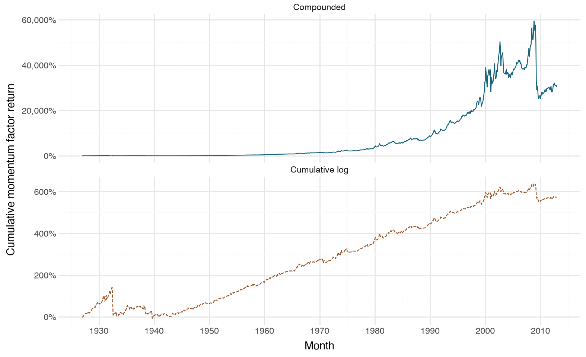

import polars as pl
from eap_pl import build_book_to_market, build_momentum, build_sizes, monthly_panel
first = pl.date(1963, 6, 1)
last = pl.date(2012, 11, 1)
keys = ["permno", "month"]
signals = {
"mom": "`mom`", "lag12": "Rₜ₋₁₂:ₜ₋₁", "lag6": "Rₜ₋₆:ₜ₋₁",
"r12m": "`r12m`", "r9m": "`r9m`", "r6m": "`r6m`", "r3m": "`r3m`",
}
sizes = build_sizes()
book_to_market = build_book_to_market(sizes).select(*keys, "bm")
panel = (
monthly_panel(sizes, first, last)
.join(build_momentum(first, last), on=keys, how="left", validate="1:1")
.join(book_to_market, on=keys, how="left", validate="1:1")
)11 The Momentum Effect
Do stocks that recently outperformed continue to outperform? Following Chapter 11 of Bali et al. (2016), we compare seven measures of prior returns and examine how their predictive power changes with the return horizon. Jegadeesh and Titman (1993) document that portfolios buying recent winners and selling recent losers earn positive returns over several months.
11.1 Measuring Momentum
At the end of month \(t\), the main measure compounds returns from \(t-11\) through \(t-1\). Skipping month \(t\) separates the signal from the most recent return, which is used to measure short-term reversal.
\[ \operatorname{Mom}_{i,t} =100\left[\prod_{m=t-11}^{t-1}(1+R_{i,m})-1\right]. \tag{11.1}\]
In BEM’s Equation (11.1), \(R_{i,m}\) is the stock’s monthly return in decimal form and \(\operatorname{Mom}_{i,t}\) is measured in percentage points. We compound the available returns and require at least nine observations. For the lagged 12- and six-month alternatives, the minimum counts are ten and five. For the 12-, nine-, six-, and three-month windows that include month \(t\), the minimum counts are ten, seven, five, and three, respectively.
A calendar window counts months even when the CRSP file has a gap. The offset determines whether the window ends in month \(t\) or in month \(t-1\).
windows = [
("mom", 11, 1, 9),
("lag12", 12, 1, 10),
("lag6", 6, 1, 5),
("r12m", 12, 0, 10),
("r9m", 9, 0, 7),
("r6m", 6, 0, 5),
("r3m", 3, 0, 3),
]
returns = (
load_parquet("msf", "crsp")
.filter(pl.col("date").is_between(first.dt.offset_by("-12mo"), last.dt.month_end()))
.select(
"permno", month=pl.col("date").dt.month_start(),
gross=pl.when(pl.col("ret").is_finite()).then(1 + pl.col("ret")),
)
.sort(KEYS)
.collect()
)Count the nonmissing gross returns before taking their product.
def _compound_trailing_return(returns, name, length, skip, minimum):
gross = pl.col("gross")
return returns.rolling(
"month", period=f"{length}mo", offset=f"-{length + skip}mo",
group_by="permno", closed="right",
).agg(
pl.when(gross.count() >= minimum).then(100 * (gross.product() - 1)).alias(name)
)The formation sample runs from June 1963 through November 2012. The panel uses the beta, size, and positive book-to-market measures from Chapter 8, Chapter 9, and Chapter 10. Holding-month excess returns use the delisting treatment in Section 7.2.
11.2 Summary Statistics
Compute the statistics separately each month and then average them across months. The final column gives the average number of available observations for the signal.
| Measure | Mean | SD | Skew | Kurt. | Min | 5% | 25% | Median | 75% | 95% | Max | n |
|---|---|---|---|---|---|---|---|---|---|---|---|---|
mom |
14.12 | 58.40 | 4.12 | 61.69 | -89.41 | -49.89 | -17.12 | 5.69 | 31.97 | 102.72 | 1064.02 | 4424 |
| Rₜ₋₁₂:ₜ₋₁ | 15.55 | 62.23 | 4.31 | 66.56 | -90.03 | -51.35 | -17.59 | 6.29 | 34.07 | 109.47 | 1164.03 | 4388 |
| Rₜ₋₆:ₜ₋₁ | 7.38 | 39.52 | 3.63 | 57.60 | -84.36 | -39.84 | -13.55 | 2.84 | 21.00 | 67.10 | 689.20 | 4567 |
r12m |
15.54 | 62.39 | 4.30 | 66.32 | -90.40 | -51.70 | -17.71 | 6.30 | 34.18 | 109.73 | 1168.12 | 4421 |
r9m |
11.34 | 51.02 | 3.84 | 55.96 | -88.40 | -46.80 | -15.99 | 4.55 | 27.82 | 88.89 | 908.54 | 4532 |
r6m |
7.39 | 39.68 | 3.61 | 57.14 | -85.18 | -40.13 | -13.61 | 2.85 | 21.07 | 67.40 | 690.85 | 4601 |
r3m |
3.63 | 26.69 | 3.16 | 48.75 | -78.54 | -30.25 | -10.22 | 1.18 | 13.52 | 43.95 | 449.21 | 4665 |
11.3 Correlations
Calculate cross-sectional correlations in each formation month and average them over time. The Pearson correlations use 0.5% winsorization in each tail of the paired observations. The Spearman correlations use the original ranks.
from eap_pl import period_correlations
controls = {"beta": "Beta", "log_cap": "Size", "bm": "`bm`"}
correlations = (
period_correlations(panel, [*controls, *signals], "month")
.select(pl.exclude("month").mean())
.row(0, named=True)
)
show_table(pl.DataFrame([
{
"Method": method, "Characteristic": label,
**{name: correlations[f"{method} {control}–{signal}"]
for signal, name in signals.items()},
}
for method in ("Pearson", "Spearman")
for control, label in controls.items()
]))| Method | Characteristic | mom |
Rₜ₋₁₂:ₜ₋₁ | Rₜ₋₆:ₜ₋₁ | r12m |
r9m |
r6m |
r3m |
|---|---|---|---|---|---|---|---|---|
| Pearson | Beta | 0.07 | 0.08 | 0.01 | 0.06 | 0.03 | -0.00 | -0.02 |
| Pearson | Size | 0.18 | 0.19 | 0.14 | 0.19 | 0.17 | 0.15 | 0.11 |
| Pearson | bm |
0.02 | 0.01 | 0.06 | 0.03 | 0.06 | 0.06 | 0.04 |
| Spearman | Beta | 0.04 | 0.05 | -0.00 | 0.03 | 0.01 | -0.01 | -0.02 |
| Spearman | Size | 0.25 | 0.26 | 0.20 | 0.26 | 0.24 | 0.20 | 0.16 |
| Spearman | bm |
0.04 | 0.02 | 0.07 | 0.05 | 0.07 | 0.08 | 0.05 |
mom is more strongly correlated with size than with beta or book-to-market.
11.4 Momentum and Stock Returns
11.4.1 Univariate Portfolio Analysis
Each month, sort the stocks with a valid signal into ten portfolios using breakpoints from all stocks with that signal. Value weights use market capitalization at formation. Returns and alphas are in percentage points per month. For each winner-minus-loser spread, regress the monthly return series on an intercept, on the market factor, or on the three Fama–French factors to estimate its mean, CAPM alpha, or FF alpha. Parentheses report six-lag Newey–West \(t\)-statistics (Newey and West 1987).
from era_pl import load_parquet
from eap_pl import format_fit, hac
from eap_pl._portfolios import assign_portfolio, portfolio_months, spread
factors = (
load_parquet("factors_monthly", "ff")
.select(
month=pl.col("date").dt.month_start(),
market=100 * pl.col("mktrf"),
smb=100 * pl.col("smb"),
hml=100 * pl.col("hml"),
rf=100 * pl.col("rf"),
)
.collect()
)
ff3 = ["market", "smb", "hml"]
weights = {"VW": "Value weighted", "EW": "Equal weighted"}
def spread_statistics(series, weight, *, ff_factors=ff3, capm=True):
sample = (series.select("month", weight)
.join(factors, on="month", validate="m:1").sort("month"))
models = {"Return": "1"}
if capm:
models["CAPM α"] = "market"
models["FF α"] = " + ".join(ff_factors)
return {
name: format_fit(hac(f"{weight} ~ {rhs}", sample), "Intercept")
for name, rhs in models.items()
}deciles = {str(i): i for i in range(1, 11)}
formation = panel.select(*keys, "cap", *signals)
members = {
signal: assign_portfolio(
formation.select(*keys, "cap", signal).filter(pl.col(signal).is_finite()),
signal, 10, "month",
).drop(signal)
for signal in signals
}
one_month = panel.select(*keys, "market", "excess")
decile_returns = {
signal: portfolio_months(
stocks.join(one_month, on=keys, validate="1:1")
.with_columns(pl.col("month").dt.offset_by("1mo")),
["portfolio"],
)
for signal, stocks in members.items()
}| Characteristic | 1 | 2 | 3 | 4 | 5 | 6 | 7 | 8 | 9 | 10 |
|---|---|---|---|---|---|---|---|---|---|---|
mom |
-52.41 | -29.84 | -17.21 | -7.33 | 1.44 | 10.11 | 19.81 | 32.24 | 52.22 | 132.09 |
| Beta | 0.85 | 0.80 | 0.75 | 0.72 | 0.71 | 0.71 | 0.73 | 0.76 | 0.83 | 0.97 |
| Market cap (millions) | 154.17 | 487.92 | 873.20 | 1179.72 | 1440.94 | 1647.90 | 1708.24 | 1701.08 | 1471.17 | 849.82 |
bm |
0.89 | 0.93 | 0.94 | 0.94 | 0.93 | 0.94 | 0.95 | 0.95 | 0.96 | 1.00 |
| Weights | Signal | 1 | 2 | 3 | 4 | 5 | 6 | 7 | 8 | 9 | 10 | 10–1 | CAPM α | FF α |
|---|---|---|---|---|---|---|---|---|---|---|---|---|---|---|
| Value weighted | mom |
-0.76 | -0.12 | 0.04 | 0.35 | 0.39 | 0.37 | 0.54 | 0.67 | 0.76 | 1.18 | 1.94 (5.38) |
2.12 (6.46) |
2.38 (7.58) |
| Value weighted | Rₜ₋₁₂:ₜ₋₁ | -0.71 | -0.12 | 0.18 | 0.31 | 0.42 | 0.40 | 0.48 | 0.66 | 0.74 | 1.08 | 1.79 (5.13) |
1.96 (6.22) |
2.25 (7.43) |
| Value weighted | Rₜ₋₆:ₜ₋₁ | -0.53 | 0.22 | 0.38 | 0.40 | 0.51 | 0.48 | 0.52 | 0.51 | 0.54 | 0.97 | 1.50 (4.17) |
1.71 (5.16) |
1.87 (5.98) |
| Value weighted | r12m |
-0.37 | 0.00 | 0.26 | 0.39 | 0.37 | 0.43 | 0.54 | 0.62 | 0.73 | 1.05 | 1.42 (3.67) |
1.67 (4.82) |
1.95 (5.84) |
| Value weighted | r9m |
0.01 | 0.40 | 0.40 | 0.40 | 0.43 | 0.44 | 0.44 | 0.58 | 0.65 | 0.97 | 0.96 (2.53) |
1.25 (3.69) |
1.46 (4.48) |
| Value weighted | r6m |
0.21 | 0.48 | 0.48 | 0.50 | 0.53 | 0.47 | 0.51 | 0.47 | 0.53 | 0.78 | 0.57 (1.70) |
0.85 (2.74) |
0.97 (3.17) |
| Value weighted | r3m |
0.33 | 0.54 | 0.60 | 0.60 | 0.61 | 0.51 | 0.46 | 0.48 | 0.48 | 0.63 | 0.30 (1.03) |
0.56 (2.04) |
0.69 (2.34) |
| Equal weighted | mom |
0.23 | 0.35 | 0.48 | 0.63 | 0.68 | 0.78 | 0.92 | 1.04 | 1.19 | 1.37 | 1.14 (3.63) |
1.24 (4.34) |
1.46 (5.17) |
| Equal weighted | Rₜ₋₁₂:ₜ₋₁ | 0.34 | 0.36 | 0.51 | 0.63 | 0.72 | 0.80 | 0.91 | 1.01 | 1.13 | 1.28 | 0.94 (3.01) |
1.04 (3.66) |
1.29 (4.54) |
| Equal weighted | Rₜ₋₆:ₜ₋₁ | 0.41 | 0.38 | 0.56 | 0.71 | 0.71 | 0.80 | 0.80 | 0.87 | 1.00 | 1.23 | 0.82 (2.86) |
0.95 (3.59) |
1.11 (4.47) |
| Equal weighted | r12m |
1.04 | 0.30 | 0.45 | 0.52 | 0.59 | 0.72 | 0.84 | 0.94 | 1.08 | 1.20 | 0.16 (0.45) |
0.30 (0.97) |
0.55 (1.75) |
| Equal weighted | r9m |
1.22 | 0.43 | 0.45 | 0.50 | 0.63 | 0.67 | 0.75 | 0.77 | 0.93 | 1.18 | -0.04 (-0.12) |
0.14 (0.44) |
0.38 (1.21) |
| Equal weighted | r6m |
1.43 | 0.53 | 0.54 | 0.54 | 0.55 | 0.69 | 0.70 | 0.72 | 0.81 | 0.90 | -0.53 (-1.62) |
-0.34 (-1.15) |
-0.14 (-0.46) |
| Equal weighted | r3m |
1.84 | 0.67 | 0.60 | 0.58 | 0.66 | 0.63 | 0.60 | 0.64 | 0.66 | 0.51 | -1.33 (-4.61) |
-1.14 (-4.22) |
-1.01 (-3.47) |
The mom winner-minus-loser spread averages 1.94% per month with value weights and 1.14% with equal weights.
11.4.2 Returns at Longer Horizons
Keep the formation-month decile assignments and capitalization weights. For each \(k\), attach the return in month \(t+k\) and compute the spread across stocks with a return in that month. A delisting contributes its adjusted return in the month it occurs. We use realized returns through December 2012 and match the factors to the month in which each return is realized.
from eap_pl._data import monthly_stock_returns
holding_returns = (
monthly_stock_returns(first.dt.offset_by("1mo"), last.dt.offset_by("1mo"))
.collect()
.join(factors.select("month", "rf", "market"), on="month", validate="m:1")
.select("permno", "market", holding="month", excess=100 * pl.col("ret") - pl.col("rf"))
)
def returns_at_horizon(stocks, k):
realized = (
stocks.with_columns(holding=pl.col("month").dt.offset_by(f"{k}mo"))
.drop("month")
.join(holding_returns, on=["permno", "holding"], validate="1:1")
.rename({"holding": "month"})
)
return portfolio_months(realized, ["portfolio"])| Weights | Signal | Statistic | t+1 | t+2 | t+3 | t+4 | t+5 | t+6 | t+7 | t+8 | t+9 | t+10 | t+11 | t+12 |
|---|---|---|---|---|---|---|---|---|---|---|---|---|---|---|
| Value weighted | mom |
Return | 1.94 (5.38) |
1.71 (5.06) |
1.23 (3.42) |
1.19 (3.25) |
0.91 (2.86) |
0.69 (2.45) |
0.54 (1.67) |
0.25 (0.79) |
0.03 (0.12) |
-0.07 (-0.22) |
-0.62 (-1.99) |
-0.63 (-1.99) |
| Value weighted | mom |
FF α | 2.38 (7.58) |
2.16 (7.19) |
1.62 (4.73) |
1.72 (5.58) |
1.45 (5.39) |
1.23 (4.95) |
1.10 (4.30) |
0.77 (2.95) |
0.55 (2.20) |
0.50 (1.93) |
-0.03 (-0.13) |
0.01 (0.05) |
| Value weighted | Rₜ₋₁₂:ₜ₋₁ | Return | 1.79 (5.13) |
1.42 (4.12) |
1.21 (3.44) |
1.08 (3.06) |
0.85 (2.55) |
0.67 (2.30) |
0.43 (1.38) |
0.08 (0.25) |
0.03 (0.09) |
-0.26 (-0.86) |
-0.46 (-1.42) |
-0.41 (-1.25) |
| Value weighted | Rₜ₋₁₂:ₜ₋₁ | FF α | 2.25 (7.43) |
1.89 (6.19) |
1.69 (5.41) |
1.64 (5.80) |
1.42 (5.11) |
1.25 (5.03) |
0.98 (3.78) |
0.65 (2.49) |
0.63 (2.50) |
0.32 (1.26) |
0.18 (0.66) |
0.24 (0.92) |
| Value weighted | Rₜ₋₆:ₜ₋₁ | Return | 1.50 (4.17) |
1.29 (3.91) |
1.14 (3.58) |
1.16 (3.56) |
1.23 (4.11) |
1.70 (6.10) |
1.40 (4.55) |
0.97 (3.25) |
0.77 (3.00) |
0.43 (1.60) |
-0.25 (-0.90) |
-0.80 (-2.49) |
| Value weighted | Rₜ₋₆:ₜ₋₁ | FF α | 1.87 (5.98) |
1.61 (5.45) |
1.39 (4.48) |
1.51 (4.95) |
1.56 (5.61) |
2.01 (7.81) |
1.75 (6.47) |
1.32 (5.09) |
1.16 (5.08) |
0.92 (4.13) |
0.25 (1.08) |
-0.27 (-1.06) |
| Value weighted | r12m |
Return | 1.42 (3.67) |
1.60 (4.39) |
1.36 (3.82) |
1.26 (3.46) |
1.01 (2.84) |
0.93 (2.81) |
0.56 (1.72) |
0.40 (1.25) |
0.07 (0.22) |
0.05 (0.18) |
-0.30 (-0.96) |
-0.61 (-1.57) |
| Value weighted | r12m |
FF α | 1.95 (5.84) |
2.08 (6.73) |
1.85 (5.82) |
1.77 (5.61) |
1.59 (5.57) |
1.51 (5.50) |
1.18 (4.55) |
0.96 (3.61) |
0.68 (2.55) |
0.65 (2.58) |
0.26 (0.98) |
0.08 (0.28) |
| Value weighted | r9m |
Return | 0.96 (2.53) |
1.29 (3.45) |
1.55 (4.43) |
1.69 (4.85) |
1.44 (4.12) |
1.33 (4.06) |
1.02 (3.12) |
0.80 (2.51) |
0.38 (1.13) |
0.22 (0.75) |
0.05 (0.19) |
-0.59 (-1.70) |
| Value weighted | r9m |
FF α | 1.46 (4.48) |
1.74 (5.40) |
1.96 (6.35) |
2.09 (6.87) |
1.88 (6.27) |
1.77 (5.92) |
1.59 (5.73) |
1.37 (5.24) |
0.91 (3.38) |
0.70 (2.77) |
0.55 (2.32) |
0.02 (0.08) |
| Value weighted | r6m |
Return | 0.57 (1.70) |
1.26 (3.36) |
1.22 (3.57) |
1.17 (3.63) |
1.19 (3.72) |
1.34 (4.45) |
1.64 (5.43) |
1.37 (4.31) |
0.93 (3.00) |
0.79 (3.14) |
0.42 (1.56) |
-0.34 (-1.03) |
| Value weighted | r6m |
FF α | 0.97 (3.17) |
1.64 (5.07) |
1.52 (4.93) |
1.43 (4.57) |
1.54 (5.10) |
1.69 (5.99) |
1.99 (7.65) |
1.72 (6.19) |
1.30 (4.87) |
1.15 (5.10) |
0.89 (4.06) |
0.21 (0.85) |
| Value weighted | r3m |
Return | 0.30 (1.03) |
1.04 (3.71) |
0.95 (3.21) |
0.91 (3.12) |
0.72 (2.49) |
0.94 (3.49) |
0.85 (3.33) |
0.97 (3.28) |
1.04 (3.33) |
1.32 (4.90) |
1.08 (4.26) |
0.07 (0.26) |
| Value weighted | r3m |
FF α | 0.69 (2.34) |
1.33 (4.91) |
1.17 (4.29) |
1.06 (3.57) |
0.94 (3.50) |
1.14 (4.30) |
1.14 (4.26) |
1.27 (4.55) |
1.32 (5.05) |
1.48 (6.01) |
1.23 (5.17) |
0.35 (1.43) |
| Equal weighted | mom |
Return | 1.14 (3.63) |
1.02 (3.37) |
0.71 (2.33) |
0.54 (1.77) |
0.38 (1.31) |
0.12 (0.42) |
-0.06 (-0.20) |
-0.20 (-0.74) |
-0.34 (-1.44) |
-0.55 (-2.25) |
-0.79 (-3.33) |
-1.00 (-3.96) |
| Equal weighted | mom |
FF α | 1.46 (5.17) |
1.35 (4.99) |
1.04 (3.71) |
0.90 (3.33) |
0.75 (2.85) |
0.48 (1.92) |
0.32 (1.26) |
0.20 (0.80) |
0.03 (0.11) |
-0.16 (-0.68) |
-0.40 (-1.82) |
-0.57 (-2.52) |
| Equal weighted | Rₜ₋₁₂:ₜ₋₁ | Return | 0.94 (3.01) |
0.87 (2.82) |
0.59 (1.92) |
0.46 (1.50) |
0.24 (0.82) |
0.07 (0.24) |
-0.10 (-0.37) |
-0.29 (-1.07) |
-0.45 (-1.79) |
-0.63 (-2.60) |
-0.78 (-3.19) |
-0.80 (-3.21) |
| Equal weighted | Rₜ₋₁₂:ₜ₋₁ | FF α | 1.29 (4.54) |
1.22 (4.52) |
0.96 (3.42) |
0.85 (3.16) |
0.63 (2.38) |
0.44 (1.76) |
0.29 (1.14) |
0.12 (0.48) |
-0.04 (-0.17) |
-0.23 (-1.03) |
-0.38 (-1.70) |
-0.39 (-1.72) |
| Equal weighted | Rₜ₋₆:ₜ₋₁ | Return | 0.82 (2.86) |
0.94 (3.38) |
0.84 (3.01) |
0.76 (2.66) |
0.71 (2.60) |
0.97 (3.76) |
0.65 (2.55) |
0.31 (1.24) |
0.18 (0.79) |
0.01 (0.05) |
-0.40 (-1.82) |
-0.85 (-3.64) |
| Equal weighted | Rₜ₋₆:ₜ₋₁ | FF α | 1.11 (4.47) |
1.20 (5.03) |
1.10 (4.47) |
1.04 (4.12) |
0.95 (3.86) |
1.14 (4.78) |
0.86 (3.60) |
0.55 (2.32) |
0.43 (1.98) |
0.30 (1.41) |
-0.10 (-0.48) |
-0.49 (-2.29) |
| Equal weighted | r12m |
Return | 0.16 (0.45) |
0.95 (3.00) |
0.85 (2.77) |
0.59 (1.91) |
0.45 (1.46) |
0.24 (0.79) |
0.04 (0.14) |
-0.10 (-0.35) |
-0.29 (-1.07) |
-0.45 (-1.79) |
-0.63 (-2.60) |
-0.80 (-3.26) |
| Equal weighted | r12m |
FF α | 0.55 (1.75) |
1.29 (4.50) |
1.21 (4.46) |
0.96 (3.39) |
0.85 (3.11) |
0.63 (2.36) |
0.42 (1.66) |
0.29 (1.16) |
0.11 (0.45) |
-0.05 (-0.19) |
-0.24 (-1.03) |
-0.40 (-1.79) |
| Equal weighted | r9m |
Return | -0.04 (-0.12) |
0.83 (2.60) |
0.99 (3.24) |
1.07 (3.68) |
0.89 (3.03) |
0.58 (1.99) |
0.34 (1.24) |
0.12 (0.42) |
-0.09 (-0.32) |
-0.25 (-1.02) |
-0.37 (-1.56) |
-0.61 (-2.68) |
| Equal weighted | r9m |
FF α | 0.38 (1.21) |
1.17 (4.24) |
1.31 (4.87) |
1.31 (4.96) |
1.16 (4.42) |
0.88 (3.33) |
0.66 (2.73) |
0.46 (1.80) |
0.27 (1.10) |
0.08 (0.32) |
-0.02 (-0.08) |
-0.25 (-1.15) |
| Equal weighted | r6m |
Return | -0.53 (-1.62) |
0.83 (2.91) |
0.93 (3.33) |
0.84 (2.97) |
0.77 (2.67) |
0.71 (2.58) |
0.97 (3.73) |
0.66 (2.54) |
0.31 (1.23) |
0.18 (0.79) |
0.01 (0.05) |
-0.42 (-1.88) |
| Equal weighted | r6m |
FF α | -0.14 (-0.46) |
1.11 (4.50) |
1.19 (4.95) |
1.10 (4.43) |
1.04 (4.13) |
0.95 (3.85) |
1.13 (4.76) |
0.86 (3.59) |
0.55 (2.29) |
0.43 (1.99) |
0.30 (1.40) |
-0.11 (-0.54) |
| Equal weighted | r3m |
Return | -1.33 (-4.61) |
0.54 (2.53) |
0.69 (3.24) |
0.59 (2.49) |
0.67 (2.78) |
0.66 (2.91) |
0.54 (2.55) |
0.37 (1.59) |
0.48 (2.09) |
0.83 (3.97) |
0.57 (2.98) |
0.08 (0.47) |
| Equal weighted | r3m |
FF α | -1.01 (-3.47) |
0.74 (3.53) |
0.89 (4.61) |
0.79 (3.60) |
0.86 (4.17) |
0.83 (4.21) |
0.72 (3.70) |
0.55 (2.56) |
0.63 (2.94) |
0.87 (4.26) |
0.68 (3.61) |
0.27 (1.47) |
The value-weighted mom spread turns negative at the longer horizons, reaching −0.63% in month \(t+12\). Its FF alpha in that month is close to zero.
11.4.3 Controlling for Market Capitalization
First divide stocks into five capitalization groups. Then compute mom quintile breakpoints separately within each capitalization group. The last column averages the control portfolios each month before calculating the mean return or estimating an alpha.
from eap_pl import bivariate_months
sort_panel = panel.select(*keys, "mom", "beta", "cap", "bm", "excess", "market")
def two_way_results(
monthly, weight, control_labels, *, ff_factors=ff3, show_cells=False, show_average=True,
):
groups = monthly.partition_by("control", as_dict=True)
series = {label: groups[i,] for i, label in enumerate(control_labels, 1)}
if show_average:
series["Average"] = monthly.group_by("month", "target").agg(
pl.col(weight).mean(), pl.col("market").first(),
)
rows = []
if show_cells:
for target in range(1, 6):
rows.append({
"Statistic": f"`mom` {target}",
**{label: f'{cell.filter(pl.col("target") == target)[weight].mean():.2f}'
for label, cell in series.items()},
})
stats = {
label: spread_statistics(
spread(cell, 5, 1, "target", weight).with_columns(
pl.col("month").dt.offset_by("1mo")
),
weight, ff_factors=ff_factors,
)
for label, cell in series.items()
}
rows.extend({
"Statistic": f"5–1 {metric}",
**{label: value[metric] for label, value in stats.items()},
} for metric in ("Return", "CAPM α", "FF α"))
return [{"Weights": weights[weight], **row} for row in rows]
quintiles = [str(i) for i in range(1, 6)]
size_momentum = bivariate_months(sort_panel, "cap", "mom", nyse=False, dependent=True)| Weights | Statistic | 1 | 2 | 3 | 4 | 5 | Average |
|---|---|---|---|---|---|---|---|
| Value weighted | mom 1 |
0.34 | -0.64 | -0.30 | -0.00 | 0.23 | -0.07 |
| Value weighted | mom 2 |
0.61 | 0.35 | 0.46 | 0.54 | 0.35 | 0.46 |
| Value weighted | mom 3 |
0.92 | 0.74 | 0.75 | 0.74 | 0.36 | 0.70 |
| Value weighted | mom 4 |
1.09 | 1.03 | 1.00 | 0.88 | 0.54 | 0.91 |
| Value weighted | mom 5 |
1.39 | 1.36 | 1.31 | 1.16 | 0.81 | 1.21 |
| Value weighted | 5–1 Return | 1.05 (3.26) |
2.01 (7.39) |
1.61 (6.17) |
1.16 (4.89) |
0.58 (2.53) |
1.28 (5.57) |
| Value weighted | 5–1 CAPM α | 1.26 (4.38) |
2.16 (8.71) |
1.72 (7.02) |
1.21 (5.55) |
0.61 (2.69) |
1.39 (6.70) |
| Value weighted | 5–1 FF α | 1.34 (4.84) |
2.30 (9.57) |
1.87 (8.02) |
1.40 (6.38) |
0.81 (3.73) |
1.55 (7.74) |
| Equal weighted | mom 1 |
1.53 | -0.62 | -0.29 | -0.02 | 0.19 | 0.16 |
| Equal weighted | mom 2 |
1.17 | 0.36 | 0.44 | 0.55 | 0.48 | 0.60 |
| Equal weighted | mom 3 |
1.24 | 0.74 | 0.77 | 0.74 | 0.53 | 0.80 |
| Equal weighted | mom 4 |
1.35 | 1.03 | 1.00 | 0.89 | 0.63 | 0.98 |
| Equal weighted | mom 5 |
1.57 | 1.37 | 1.30 | 1.17 | 1.01 | 1.29 |
| Equal weighted | 5–1 Return | 0.04 (0.12) |
1.99 (7.42) |
1.60 (6.13) |
1.19 (4.95) |
0.82 (3.63) |
1.13 (4.95) |
| Equal weighted | 5–1 CAPM α | 0.25 (0.80) |
2.14 (8.76) |
1.71 (7.01) |
1.25 (5.62) |
0.85 (3.85) |
1.24 (6.02) |
| Equal weighted | 5–1 FF α | 0.32 (1.02) |
2.28 (9.61) |
1.87 (8.07) |
1.43 (6.44) |
1.06 (4.72) |
1.39 (6.93) |
11.4.4 Momentum Among Small Stocks
Restrict the first sort to the bottom fifth of the capitalization distribution. Split that group into four portfolios and sort each portfolio into mom quintiles.
small = sort_panel.filter(pl.col("cap") <= pl.col("cap").quantile(0.20).over("month"))
small = assign_portfolio(small, "cap", 4, "month", label="control")
small = assign_portfolio(small, "mom", 5, ["month", "control"], label="target")
small_momentum = portfolio_months(small.drop_nulls("target"), ["control", "target"])
show_table(pl.DataFrame([
row for weight in weights
for row in two_way_results(
small_momentum, weight, ["0–5%", "5–10%", "10–15%", "15–20%"],
show_cells=True, show_average=False,
)
]))| Weights | Statistic | 0–5% | 5–10% | 10–15% | 15–20% |
|---|---|---|---|---|---|
| Value weighted | mom 1 |
3.11 | 0.39 | -0.34 | -0.30 |
| Value weighted | mom 2 |
2.51 | 1.12 | 0.41 | 0.37 |
| Value weighted | mom 3 |
2.23 | 1.10 | 0.90 | 0.88 |
| Value weighted | mom 4 |
2.22 | 1.31 | 0.99 | 1.11 |
| Value weighted | mom 5 |
2.35 | 1.48 | 1.35 | 1.19 |
| Value weighted | 5–1 Return | -0.76 (-1.41) |
1.09 (3.22) |
1.69 (5.19) |
1.48 (4.20) |
| Value weighted | 5–1 CAPM α | -0.48 (-0.97) |
1.34 (4.31) |
1.88 (6.12) |
1.67 (5.08) |
| Value weighted | 5–1 FF α | -0.44 (-0.87) |
1.44 (4.61) |
1.92 (6.40) |
1.74 (5.66) |
| Equal weighted | mom 1 |
4.09 | 0.43 | -0.32 | -0.28 |
| Equal weighted | mom 2 |
3.13 | 1.15 | 0.44 | 0.37 |
| Equal weighted | mom 3 |
2.67 | 1.09 | 0.90 | 0.88 |
| Equal weighted | mom 4 |
2.54 | 1.33 | 0.98 | 1.11 |
| Equal weighted | mom 5 |
2.59 | 1.47 | 1.37 | 1.17 |
| Equal weighted | 5–1 Return | -1.50 (-2.62) |
1.05 (3.07) |
1.69 (5.15) |
1.45 (4.13) |
| Equal weighted | 5–1 CAPM α | -1.23 (-2.29) |
1.29 (4.16) |
1.87 (6.10) |
1.64 (5.02) |
| Equal weighted | 5–1 FF α | -1.18 (-2.14) |
1.38 (4.42) |
1.91 (6.41) |
1.72 (5.60) |
11.4.5 Controlling for Beta and Book-to-Market
The dependent sorts calculate mom breakpoints within each beta or bm quintile. The independent sorts use the intersection of two sets of breakpoints computed separately across stocks for each variable. The tables show the high-minus-low mom spread within each control quintile and its average across the control quintiles.
sort_variables = {"beta": "Beta", "cap": "Market cap", "bm": "`bm`"}
def two_way_spreads(pairs, *, dependent, momentum_first=False):
rows = []
for control, target in pairs:
monthly = bivariate_months(sort_panel, control, target, nyse=False, dependent=dependent)
omit = {"cap": "smb", "bm": "hml"}.get(target)
ff_factors = [factor for factor in ff3 if factor != omit]
characteristic = target if momentum_first else control
for weight in weights:
rows.extend(
{"Characteristic": sort_variables[characteristic], **row}
for row in two_way_results(monthly, weight, quintiles, ff_factors=ff_factors)
)
return pl.DataFrame(rows)| Characteristic | Weights | Statistic | 1 | 2 | 3 | 4 | 5 | Average |
|---|---|---|---|---|---|---|---|---|
| Beta | Value weighted | 5–1 Return | 1.08 (3.98) |
0.95 (4.01) |
0.78 (3.05) |
1.14 (4.33) |
1.78 (5.06) |
1.14 (4.97) |
| Beta | Value weighted | 5–1 CAPM α | 1.18 (4.66) |
1.04 (4.58) |
0.89 (3.58) |
1.25 (4.81) |
1.89 (5.77) |
1.25 (5.83) |
| Beta | Value weighted | 5–1 FF α | 1.34 (5.57) |
1.18 (5.29) |
1.05 (4.33) |
1.39 (5.31) |
2.14 (6.41) |
1.42 (6.74) |
| Beta | Equal weighted | 5–1 Return | 0.31 (1.19) |
0.88 (3.83) |
0.83 (3.70) |
1.32 (5.80) |
1.47 (4.47) |
0.96 (4.21) |
| Beta | Equal weighted | 5–1 CAPM α | 0.44 (1.88) |
0.96 (4.62) |
0.91 (4.46) |
1.38 (6.54) |
1.52 (5.11) |
1.04 (5.08) |
| Beta | Equal weighted | 5–1 FF α | 0.56 (2.54) |
1.09 (5.26) |
1.04 (5.14) |
1.56 (7.19) |
1.83 (6.07) |
1.22 (6.04) |
bm |
Value weighted | 5–1 Return | 1.76 (5.49) |
0.56 (1.94) |
0.74 (2.33) |
0.55 (1.63) |
0.74 (2.37) |
0.87 (3.25) |
bm |
Value weighted | 5–1 CAPM α | 1.92 (6.43) |
0.69 (2.53) |
0.86 (2.83) |
0.66 (2.05) |
0.86 (3.07) |
1.00 (4.12) |
bm |
Value weighted | 5–1 FF α | 2.19 (7.30) |
0.87 (3.12) |
1.04 (3.43) |
0.89 (2.89) |
1.17 (4.47) |
1.23 (5.27) |
bm |
Equal weighted | 5–1 Return | 1.14 (3.93) |
0.70 (2.57) |
0.63 (2.55) |
0.54 (2.16) |
0.45 (1.59) |
0.69 (2.79) |
bm |
Equal weighted | 5–1 CAPM α | 1.24 (4.68) |
0.79 (3.18) |
0.69 (3.08) |
0.61 (2.69) |
0.51 (2.01) |
0.77 (3.46) |
bm |
Equal weighted | 5–1 FF α | 1.47 (5.43) |
0.99 (3.79) |
0.88 (3.96) |
0.79 (3.52) |
0.67 (2.93) |
0.96 (4.39) |
| Characteristic | Weights | Statistic | 1 | 2 | 3 | 4 | 5 | Average |
|---|---|---|---|---|---|---|---|---|
| Beta | Value weighted | 5–1 Return | 1.10 (3.78) |
1.22 (4.92) |
0.74 (2.22) |
0.93 (3.18) |
1.40 (4.54) |
1.08 (4.41) |
| Beta | Value weighted | 5–1 CAPM α | 1.19 (4.39) |
1.32 (5.42) |
0.88 (2.80) |
1.06 (3.85) |
1.51 (5.28) |
1.19 (5.31) |
| Beta | Value weighted | 5–1 FF α | 1.31 (4.89) |
1.51 (6.45) |
1.04 (3.32) |
1.29 (4.85) |
1.73 (5.93) |
1.38 (6.34) |
| Beta | Equal weighted | 5–1 Return | 0.44 (1.64) |
0.99 (3.97) |
0.81 (3.09) |
1.28 (5.47) |
1.41 (4.85) |
0.99 (4.13) |
| Beta | Equal weighted | 5–1 CAPM α | 0.56 (2.25) |
1.08 (4.75) |
0.90 (3.77) |
1.35 (6.32) |
1.44 (5.50) |
1.07 (4.97) |
| Beta | Equal weighted | 5–1 FF α | 0.67 (2.76) |
1.20 (5.31) |
1.03 (4.32) |
1.55 (7.19) |
1.76 (6.85) |
1.24 (5.90) |
| Market cap | Value weighted | 5–1 Return | 0.95 (3.89) |
1.84 (7.31) |
1.71 (6.30) |
1.42 (5.55) |
0.97 (3.15) |
1.38 (5.80) |
| Market cap | Value weighted | 5–1 CAPM α | 1.07 (4.85) |
1.96 (8.47) |
1.83 (7.27) |
1.53 (6.60) |
1.12 (3.91) |
1.50 (7.05) |
| Market cap | Value weighted | 5–1 FF α | 1.16 (5.45) |
2.10 (9.33) |
1.99 (8.38) |
1.71 (7.82) |
1.31 (4.79) |
1.66 (8.28) |
| Market cap | Equal weighted | 5–1 Return | 0.30 (1.20) |
1.83 (7.26) |
1.70 (6.25) |
1.45 (5.47) |
1.15 (4.10) |
1.29 (5.49) |
| Market cap | Equal weighted | 5–1 CAPM α | 0.41 (1.81) |
1.95 (8.42) |
1.82 (7.26) |
1.57 (6.53) |
1.28 (4.82) |
1.41 (6.66) |
| Market cap | Equal weighted | 5–1 FF α | 0.50 (2.14) |
2.09 (9.29) |
2.00 (8.47) |
1.75 (7.72) |
1.44 (5.78) |
1.56 (7.84) |
bm |
Value weighted | 5–1 Return | 1.54 (5.31) |
0.52 (1.75) |
0.90 (2.51) |
0.70 (1.88) |
0.72 (2.33) |
0.87 (3.16) |
bm |
Value weighted | 5–1 CAPM α | 1.70 (6.28) |
0.66 (2.32) |
1.05 (3.05) |
0.83 (2.37) |
0.83 (2.83) |
1.01 (4.03) |
bm |
Value weighted | 5–1 FF α | 1.93 (7.46) |
0.84 (3.08) |
1.22 (3.56) |
1.04 (3.07) |
1.10 (3.91) |
1.22 (5.13) |
bm |
Equal weighted | 5–1 Return | 1.29 (4.73) |
0.74 (2.63) |
0.64 (2.37) |
0.57 (2.11) |
0.44 (1.69) |
0.73 (2.94) |
bm |
Equal weighted | 5–1 CAPM α | 1.38 (5.52) |
0.81 (3.22) |
0.70 (2.85) |
0.64 (2.62) |
0.49 (2.05) |
0.80 (3.62) |
bm |
Equal weighted | 5–1 FF α | 1.59 (6.54) |
1.00 (3.90) |
0.92 (3.75) |
0.83 (3.40) |
0.64 (2.84) |
0.99 (4.55) |
11.4.6 Controlling for Momentum
Reverse the sort order to ask whether differences associated with beta, capitalization, or bm remain within mom quintiles. For Table 11.9, we follow BEM’s discussion and calculate the second set of breakpoints within each mom quintile. For capitalization spreads, omit smb from the FF regression. For bm spreads, omit hml.
| Characteristic | Weights | Statistic | 1 | 2 | 3 | 4 | 5 | Average |
|---|---|---|---|---|---|---|---|---|
| Beta | Value weighted | 5–1 Return | -0.19 (-0.61) |
-0.35 (-1.58) |
-0.24 (-1.27) |
-0.21 (-1.10) |
-0.18 (-0.66) |
-0.23 (-1.21) |
| Beta | Value weighted | 5–1 CAPM α | -0.56 (-1.90) |
-0.69 (-3.43) |
-0.55 (-3.04) |
-0.51 (-2.76) |
-0.51 (-2.06) |
-0.56 (-3.27) |
| Beta | Value weighted | 5–1 FF α | -0.33 (-1.11) |
-0.51 (-2.47) |
-0.40 (-2.25) |
-0.33 (-1.84) |
-0.22 (-0.82) |
-0.36 (-2.13) |
| Beta | Equal weighted | 5–1 Return | -1.46 (-6.54) |
-0.46 (-2.41) |
-0.27 (-1.40) |
-0.31 (-1.56) |
-0.34 (-1.37) |
-0.57 (-3.05) |
| Beta | Equal weighted | 5–1 CAPM α | -1.81 (-8.23) |
-0.84 (-4.70) |
-0.66 (-4.05) |
-0.71 (-4.12) |
-0.74 (-3.29) |
-0.95 (-5.75) |
| Beta | Equal weighted | 5–1 FF α | -1.75 (-8.19) |
-0.75 (-4.71) |
-0.62 (-4.08) |
-0.60 (-3.84) |
-0.48 (-2.21) |
-0.84 (-5.62) |
| Market cap | Value weighted | 5–1 Return | -1.95 (-5.63) |
-0.62 (-2.48) |
-0.60 (-2.82) |
-0.68 (-3.05) |
-0.57 (-2.52) |
-0.89 (-4.00) |
| Market cap | Value weighted | 5–1 CAPM α | -2.06 (-5.73) |
-0.68 (-2.68) |
-0.64 (-2.96) |
-0.71 (-3.13) |
-0.58 (-2.50) |
-0.94 (-4.11) |
| Market cap | Value weighted | 5–1 FF α | -2.08 (-5.39) |
-0.69 (-2.67) |
-0.59 (-2.66) |
-0.65 (-2.69) |
-0.44 (-1.86) |
-0.89 (-3.71) |
| Market cap | Equal weighted | 5–1 Return | -2.82 (-7.67) |
-0.90 (-3.93) |
-0.74 (-3.60) |
-0.76 (-3.46) |
-0.55 (-2.64) |
-1.15 (-5.48) |
| Market cap | Equal weighted | 5–1 CAPM α | -2.95 (-7.68) |
-1.00 (-4.17) |
-0.82 (-3.86) |
-0.82 (-3.62) |
-0.60 (-2.79) |
-1.24 (-5.56) |
| Market cap | Equal weighted | 5–1 FF α | -2.95 (-7.30) |
-1.00 (-4.11) |
-0.82 (-3.76) |
-0.79 (-3.32) |
-0.46 (-2.11) |
-1.20 (-5.23) |
bm |
Value weighted | 5–1 Return | 0.96 (3.73) |
0.63 (2.52) |
0.40 (2.42) |
0.32 (1.79) |
0.22 (0.95) |
0.51 (3.12) |
bm |
Value weighted | 5–1 CAPM α | 1.06 (3.92) |
0.68 (2.55) |
0.45 (2.57) |
0.34 (1.88) |
0.27 (1.13) |
0.56 (3.28) |
bm |
Value weighted | 5–1 FF α | 1.04 (3.83) |
0.65 (2.43) |
0.42 (2.43) |
0.31 (1.74) |
0.26 (1.10) |
0.54 (3.17) |
bm |
Equal weighted | 5–1 Return | 1.51 (7.16) |
1.01 (5.44) |
1.05 (6.87) |
0.88 (4.93) |
0.71 (3.36) |
1.03 (6.43) |
bm |
Equal weighted | 5–1 CAPM α | 1.66 (7.55) |
1.15 (6.01) |
1.18 (7.82) |
1.01 (5.78) |
0.83 (3.96) |
1.17 (7.17) |
bm |
Equal weighted | 5–1 FF α | 1.67 (7.63) |
1.13 (5.94) |
1.16 (7.73) |
1.00 (5.70) |
0.83 (3.98) |
1.16 (7.13) |
| Characteristic | Weights | Statistic | 1 | 2 | 3 | 4 | 5 | Average |
|---|---|---|---|---|---|---|---|---|
| Beta | Value weighted | 5–1 Return | -0.54 (-1.96) |
-0.27 (-1.14) |
-0.31 (-1.25) |
-0.31 (-1.30) |
-0.24 (-0.93) |
-0.34 (-1.57) |
| Beta | Value weighted | 5–1 CAPM α | -0.91 (-3.48) |
-0.63 (-2.99) |
-0.67 (-2.90) |
-0.67 (-3.13) |
-0.59 (-2.42) |
-0.69 (-3.69) |
| Beta | Value weighted | 5–1 FF α | -0.74 (-2.98) |
-0.44 (-2.03) |
-0.47 (-2.13) |
-0.43 (-2.15) |
-0.32 (-1.23) |
-0.48 (-2.66) |
| Beta | Equal weighted | 5–1 Return | -1.34 (-6.18) |
-0.48 (-2.23) |
-0.36 (-1.55) |
-0.35 (-1.51) |
-0.38 (-1.55) |
-0.58 (-2.88) |
| Beta | Equal weighted | 5–1 CAPM α | -1.67 (-7.73) |
-0.88 (-4.37) |
-0.79 (-3.93) |
-0.79 (-3.88) |
-0.79 (-3.55) |
-0.98 (-5.39) |
| Beta | Equal weighted | 5–1 FF α | -1.62 (-7.70) |
-0.77 (-4.57) |
-0.68 (-3.96) |
-0.63 (-3.48) |
-0.54 (-2.42) |
-0.85 (-5.33) |
| Market cap | Value weighted | 5–1 Return | -0.59 (-1.91) |
-0.66 (-2.60) |
-0.76 (-3.42) |
-0.77 (-3.27) |
-0.57 (-2.39) |
-0.67 (-2.97) |
| Market cap | Value weighted | 5–1 CAPM α | -0.66 (-2.10) |
-0.72 (-2.77) |
-0.81 (-3.57) |
-0.82 (-3.40) |
-0.61 (-2.50) |
-0.72 (-3.13) |
| Market cap | Value weighted | 5–1 FF α | -0.67 (-2.03) |
-0.71 (-2.74) |
-0.77 (-3.36) |
-0.75 (-2.90) |
-0.46 (-1.88) |
-0.67 (-2.82) |
| Market cap | Equal weighted | 5–1 Return | -1.46 (-4.80) |
-0.91 (-3.97) |
-0.88 (-4.15) |
-0.84 (-3.66) |
-0.61 (-2.77) |
-0.94 (-4.41) |
| Market cap | Equal weighted | 5–1 CAPM α | -1.55 (-4.91) |
-1.01 (-4.17) |
-0.97 (-4.42) |
-0.92 (-3.85) |
-0.69 (-3.02) |
-1.03 (-4.59) |
| Market cap | Equal weighted | 5–1 FF α | -1.56 (-4.65) |
-1.00 (-4.12) |
-0.97 (-4.39) |
-0.89 (-3.55) |
-0.52 (-2.30) |
-0.99 (-4.31) |
bm |
Value weighted | 5–1 Return | 0.95 (3.72) |
0.65 (2.59) |
0.51 (2.89) |
0.34 (1.83) |
0.13 (0.58) |
0.52 (3.18) |
bm |
Value weighted | 5–1 CAPM α | 1.05 (4.01) |
0.71 (2.62) |
0.58 (3.20) |
0.38 (1.95) |
0.18 (0.78) |
0.58 (3.42) |
bm |
Value weighted | 5–1 FF α | 1.02 (3.91) |
0.68 (2.50) |
0.55 (3.08) |
0.35 (1.81) |
0.16 (0.72) |
0.55 (3.30) |
bm |
Equal weighted | 5–1 Return | 1.52 (7.26) |
1.03 (5.35) |
1.11 (6.16) |
0.92 (4.92) |
0.67 (3.33) |
1.05 (6.38) |
bm |
Equal weighted | 5–1 CAPM α | 1.68 (7.68) |
1.18 (5.99) |
1.24 (7.11) |
1.06 (5.74) |
0.79 (3.93) |
1.19 (7.15) |
bm |
Equal weighted | 5–1 FF α | 1.68 (7.72) |
1.16 (5.95) |
1.23 (7.04) |
1.04 (5.67) |
0.79 (3.95) |
1.18 (7.12) |
11.4.7 Fama–MacBeth Regressions
Regress next month’s excess return on mom and combinations of beta, log capitalization, and bm. Winsorize the regressors at 0.5% in each tail within each month. Report the average monthly coefficients and estimate their standard errors using six Newey–West lags.
from itertools import combinations
from eap_pl import fama_macbeth_table
terms = {"mom": "`mom`", **controls}
specifications = [
["mom", *subset]
for n in range(len(controls) + 1)
for subset in combinations(controls, n)
]
show_table(fama_macbeth_table(panel, specifications, terms, digits=3))| Term | (1) | (2) | (3) | (4) | (5) | (6) | (7) | (8) |
|---|---|---|---|---|---|---|---|---|
mom |
0.007 (3.09) |
0.006 (3.14) |
0.007 (3.85) |
0.006 (2.56) |
0.007 (4.37) |
0.005 (2.56) |
0.007 (3.36) |
0.007 (3.72) |
| Beta | -0.379 (-2.93) |
-0.144 (-0.85) |
-0.286 (-2.32) |
-0.079 (-0.51) |
||||
| Size | -0.178 (-3.96) |
-0.172 (-3.22) |
-0.168 (-3.64) |
-0.170 (-3.20) |
||||
bm |
0.405 (5.58) |
0.320 (5.15) |
0.250 (3.25) |
0.187 (3.04) |
||||
| Intercept | 0.599 (2.28) |
0.873 (3.84) |
1.334 (3.23) |
0.249 (0.93) |
1.426 (3.73) |
0.532 (2.42) |
1.147 (2.53) |
1.278 (3.17) |
| Adjusted R² | 0.01 | 0.03 | 0.02 | 0.02 | 0.04 | 0.03 | 0.03 | 0.04 |
| n | 4409 | 4408 | 4408 | 3374 | 4408 | 3373 | 3374 | 3373 |
In the full specification, a 100-percentage-point difference in mom corresponds to about 0.70 percentage points in next month’s fitted excess return.
11.5 The Momentum Factor
The Kenneth French Data Library constructs its momentum factor using six value-weighted portfolios formed on size and prior return. The sorts use an NYSE median for size and NYSE 30th and 70th percentiles for prior return. The factor averages the returns of the small- and large-stock winner portfolios and subtracts the average return of the corresponding loser portfolios. We use the December 2024 release listed in the book’s setup instructions and plot January 1927 through December 2012, the period in BEM.
from io import StringIO
from pathlib import Path
import re
from eap_pl import plot_cumulative_returns
archive = Path("data/momentum-202412.csv").read_text()
monthly_rows = re.findall(r"(?m)^\s*(\d{6},[^\r\n]+)", archive)
momentum_factor = (
pl.read_csv(
StringIO("\n".join(monthly_rows)), has_header=False, new_columns=["ym", "mom"],
schema_overrides={"mom": pl.String},
)
.filter(pl.col("ym").is_between(192701, 201212))
.select(
date=(pl.col("ym").cast(pl.String) + "01").str.to_date("%Y%m%d"),
mom=pl.col("mom").str.strip_chars().cast(pl.Float64) / 100,
)
.sort("date")
.with_columns(
compounded=(1 + pl.col("mom")).cum_prod() - 1,
cumulative_log=pl.col("mom").log1p().cum_sum(),
)
)
assert momentum_factor.height == 1032
assert momentum_factor.select(pl.col("mom").is_finite().all()).item()
plot_cumulative_returns(momentum_factor, y_label="Cumulative momentum factor return")
The compounded series shows a sharp drawdown in 2009.
11.6 The Fama–French–Carhart Four-Factor Model
Carhart (1997) adds a momentum factor to the three stock-market factors of Fama and French (1993). The four-factor model is BEM’s Equation (11.2).
\[ r_{p,t}=\alpha_p+\beta_{\mathrm{MKT},p}\mathrm{MKT}_t +\beta_{\mathrm{SMB},p}\mathrm{SMB}_t+\beta_{\mathrm{HML},p}\mathrm{HML}_t +\beta_{\mathrm{MOM},p}\mathrm{MOM}_t+\varepsilon_{p,t}. \tag{11.2}\]
Here \(r_{p,t}\) is the excess return of portfolio \(p\), and \(\alpha_p\) is the intercept after accounting for its exposures to the market, size, value, and momentum factors.